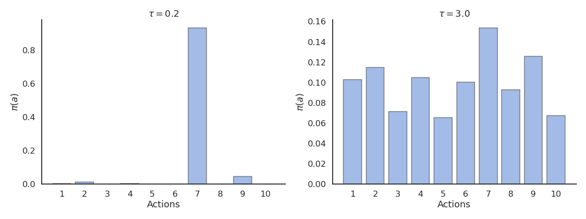

Softmax policies allow to learn multimodal policies, but only for discrete action spaces.
\pi(s, a) = \frac{\exp Q(s, a) / \tau}{ \sum_b \exp Q(s, b) / \tau}
Continuous Gaussian policies are still unimodal policies: they mostly sample actions around the mean \mu_\theta(s) and the variance \sigma_\theta(s) decreases to 0 with learning.
If we want a multimodal policy that learns different solutions, we would need to learn a softmax distribution (Gibbs / Boltzmann) over the continuous action space: untractable
This new objective function defines the maximum entropy RL framework.
The entropy of the policy regularizes the objective function: the policy should still maximize the returns, but stay as stochastic as possible depending on the parameter \alpha.
Entropy regularization can always be added to PG methods such as A3C.
It is always possible to fall back to hard RL by setting \alpha to 0.
Entropy of a policy
The entropy of a policy in a state s_t is defined by the expected negative log-likelihood of the policy:
H(\pi_\theta(s_t)) = - \sum_a \pi_\theta(s_t, a) \, \log \pi_\theta(s_t, a)
For a continuous action space:
H(\pi_\theta(s_t)) = - \int_a \pi_\theta(s_t, a) \, \log \pi_\theta(s_t, a) \, da
The entropy necessitates to sum or integrate the self-information of each possible action in a given state.
Entropy of a policy
A deterministic (greedy) policy has zero entropy, the same action is always taken: exploitation.
A random policy has a high entropy, you cannot predict which action will be taken: exploration.

Maximum entropy RL embeds the exploration-exploitation trade-off inside the objective function instead of relying on external mechanisms such as the softmax temperature.
Soft Q-learning
In soft Q-learning, the objective function is defined over complete trajectories:
The goal of the agent is to generate trajectories associated with a lot of rewards (high return) but only visiting states with a high entropy, i.e. where the policy is random (exploration).
The agent can decide how the trade-off is solved via regularization:
If a single action leads to high rewards, the policy may become deterministic.
If several actions lead to equivalent rewards, the policy must stay stochastic.
Soft Q-learning
In soft Q-learning, the policy is implemented as a softmax over soft Q-values:
Soft Q-learning belongs to energy-based models, as -\dfrac{Q^\text{soft}_\theta (s, a)}{\alpha} represents the energy of the Boltzmann distribution (see restricted Boltzmann machines).
The partition function\sum_b \exp \dfrac{Q^\text{soft}_\theta (s, b)}{\alpha} is untractable for continuous action spaces, as one would need to integrate over the whole action space, but it will disappear from the equations anyway.
What are soft values?
Soft V and Q values are the equivalent of the hard value functions, but for the new objective:
Haarnoja et al (2017) showed that these soft value functions are the solution of the entropy-regularized objective function.
All we need is to be able to estimate them… Soft Q-learning uses complex optimization methods (variational inference) to do it, but SAC is more practical.
If we want to train a criticQ_\varphi(s, a) to estimate the true soft Q-value of an action Q^\text{soft}_\theta(s, a), we just need to sample (s_t, a_t, r_{t+1}, a_{t+1}) transitions and minimize:
The only difference with a SARSA critic is that the negative log-likelihood of the next action is added to the target.
In practice, s_t, a_t and r_{t+1} can come from a replay buffer, but a_{t+1} has to be sampled from the current policy \pi_\theta (but not taken!).
SAC is therefore an off-policy actor-critic algorithm, but with stochastic policies!
Soft Actor-Critic (SAC)
But how do we train the actor? The policy is defined by a softmax over the soft Q-values, but the log-partition Z is untractable for continuous spaces:
The initial version of SAC additionally learned a soft V-value critic, but this turns out not to be needed.
SAC results
The enhanced exploration strategy through maximum entropy RL allows to learn robust and varied strategies that can cope with changes in the environment.
Haarnoja, T., Tang, H., Abbeel, P., and Levine, S. (2017). Reinforcement Learning with Deep Energy-Based Policies. http://arxiv.org/abs/1702.08165.
Haarnoja, T., Zhou, A., Hartikainen, K., Tucker, G., Ha, S., Tan, J., et al. (2018). Soft Actor-Critic Algorithms and Applications. http://arxiv.org/abs/1812.05905.